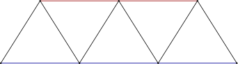
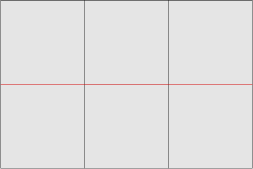

Line elements
using FerriteTikzLine and QuadraticLine cells are supported in both one- and two-dimensional space. They cover one-dimensional meshes, trusses, frames and reinforcement bars embedded in a solid.
Because a line element encloses no area, it is treated differently from an area cell in two ways:
- it is stroked, never filled —
cellcolorandcellsetcolorsset the stroke colour; - it is drawn once per cell, without deduplication — a member is an element in its own right, not a boundary shared between two cells.
One-dimensional meshes
A grid with Ferrite.getspatialdim(grid) == 1 is drawn along the x axis:
grid = generate_grid(Line, (6,))tikzgrid(grid; drawnodes = true, nodelabels = true, celllabels = true, picturescale = 6)Trusses and frames
The same cells in a two-dimensional grid give a truss. cellsetcolors is the natural way to pick out members:
nodes = [ Node((0.0, 0.0)), Node((1.0, 0.0)), Node((2.0, 0.0)), Node((3.0, 0.0)), Node((0.5, 0.8)), Node((1.5, 0.8)), Node((2.5, 0.8)),]members = [ Line((1, 2)), Line((2, 3)), Line((3, 4)), # bottom chord Line((5, 6)), Line((6, 7)), # top chord Line((1, 5)), Line((5, 2)), Line((2, 6)), # web Line((6, 3)), Line((3, 7)), Line((7, 4)),]truss = Grid(members, nodes)addcellset!(truss, "bottom", 1:3)addcellset!(truss, "top", 4:5)tikzgrid( truss; cellsetcolors = ["bottom" => "blue!60!black", "top" => "red!60!black"], linewidth = "thick", drawnodes = true, picturescale = 4,)
Curved line elements
A QuadraticLine bent out of its chord is drawn as an exact cubic Bézier, the same machinery that curves quadratic triangle and quadrilateral edges:
arch = Grid( [QuadraticLine((1, 2, 3)), QuadraticLine((2, 4, 5))], [ Node((0.0, 0.0)), Node((2.0, 1.0)), Node((1.0, 0.75)), Node((4.0, 0.0)), Node((3.0, 0.75)), ],)tikzgrid(arch; linewidth = "very thick", drawnodes = true, picturescale = 3)">
<path fill="none" stroke-width="1.19553" stroke-linecap="butt" stroke-linejoin="miter" stroke="rgb(0%25, 0%25, 0%25)" stroke-opacity="1" stroke-miterlimit="10" d="M -0.00111029 0.000424203 C 56.693426 56.694961 113.387963 85.042229 170.0825 85.042229 " transform="matrix(0.992159, 0, 0, -0.992159, 2.184695, 85.500421)"/>
</g>
<g clip-path="url(%23clip-1786204754120734--1)">
<path fill="none" stroke-width="1.19553" stroke-linecap="butt" stroke-linejoin="miter" stroke="rgb(0%25, 0%25, 0%25)" stroke-opacity="1" stroke-miterlimit="10" d="M 170.0825 85.042229 C 226.773099 85.042229 283.467636 56.694961 340.162173 0.000424203 " transform="matrix(0.992159, 0, 0, -0.992159, 2.184695, 85.500421)"/>
</g>
<g clip-path="url(%23clip-1786204754120734--2)">
<path fill-rule="nonzero" fill="rgb(0%25, 0%25, 0%25)" fill-opacity="1" d="M 3.308594 85.5 C 3.308594 84.878906 2.804688 84.375 2.183594 84.375 C 1.5625 84.375 1.058594 84.878906 1.058594 85.5 C 1.058594 86.121094 1.5625 86.625 2.183594 86.625 C 2.804688 86.625 3.308594 86.121094 3.308594 85.5 Z M 3.308594 85.5 "/>
</g>
<path fill-rule="nonzero" fill="rgb(0%25, 0%25, 0%25)" fill-opacity="1" d="M 172.058594 1.125 C 172.058594 0.503906 171.554688 0 170.933594 0 C 170.3125 0 169.808594 0.503906 169.808594 1.125 C 169.808594 1.75 170.3125 2.25 170.933594 2.25 C 171.554688 2.25 172.058594 1.75 172.058594 1.125 Z M 172.058594 1.125 "/>
<path fill-rule="nonzero" fill="rgb(0%25, 0%25, 0%25)" fill-opacity="1" d="M 87.683594 22.21875 C 87.683594 21.597656 87.179688 21.09375 86.558594 21.09375 C 85.9375 21.09375 85.433594 21.597656 85.433594 22.21875 C 85.433594 22.839844 85.9375 23.34375 86.558594 23.34375 C 87.179688 23.34375 87.683594 22.839844 87.683594 22.21875 Z M 87.683594 22.21875 "/>
<g clip-path="url(%23clip-1786204754120734--3)">
<path fill-rule="nonzero" fill="rgb(0%25, 0%25, 0%25)" fill-opacity="1" d="M 340.804688 85.5 C 340.804688 84.878906 340.300781 84.375 339.679688 84.375 C 339.058594 84.375 338.554688 84.878906 338.554688 85.5 C 338.554688 86.121094 339.058594 86.625 339.679688 86.625 C 340.300781 86.625 340.804688 86.121094 340.804688 85.5 Z M 340.804688 85.5 "/>
</g>
<path fill-rule="nonzero" fill="rgb(0%25, 0%25, 0%25)" fill-opacity="1" d="M 256.429688 22.21875 C 256.429688 21.597656 255.925781 21.09375 255.304688 21.09375 C 254.683594 21.09375 254.179688 21.597656 254.179688 22.21875 C 254.179688 22.839844 254.683594 23.34375 255.304688 23.34375 C 255.925781 23.34375 256.429688 22.839844 256.429688 22.21875 Z M 256.429688 22.21875 "/>
</svg>)
Mixing line and area cells
A grid may hold both. The quadrilaterals are filled and their shared edges drawn once; the bar is stroked on top in its own colour:
nodes = [Node((Float64(i), Float64(j))) for j in 0:2 for i in 0:3]idx(i, j) = j * 4 + i + 1quads = [Quadrilateral((idx(i, j), idx(i + 1, j), idx(i + 1, j + 1), idx(i, j + 1))) for j in 0:1 for i in 0:2]bars = [Line((idx(i, 1), idx(i + 1, 1))) for i in 0:2]reinforced = Grid(Union{Quadrilateral, Line}[quads; bars], nodes)addcellset!(reinforced, "rebar", (length(quads) + 1):(length(quads) + length(bars)))tikzgrid( reinforced; cellcolor = "gray!20", cellsetcolors = ["rebar" => "red"], linewidth = "thick", picturescale = 5,)
Deflection of a one-dimensional mesh
Displacements normally live in the grid's own space, so a scalar field on a 1D grid moves the nodes along the x axis. Passing Vec{2} displacements instead draws a transverse deflection, which is what you usually want for a beam:
grid = generate_grid(Line, (24,))w = [Vec{2}((0.0, 0.4 * (1 - x[1]^2)^2)) for x in Ferrite.get_node_coordinate.((grid,), 1:getnnodes(grid))]tikzgrid( grid, w; linewidth = "thick", reference = (linecolor = "gray", linestyle = "dashed"), picturescale = 6,)The reference-configuration overlay works exactly as it does for area cells, so the undeformed axis is drawn dashed underneath.